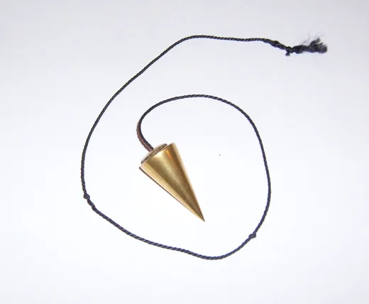
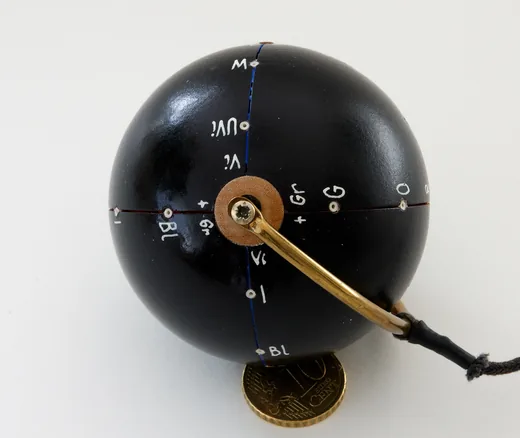
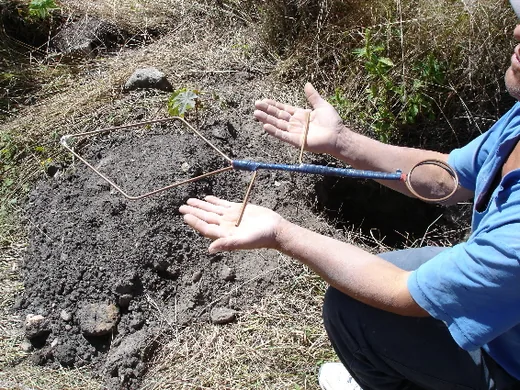
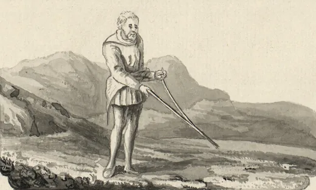
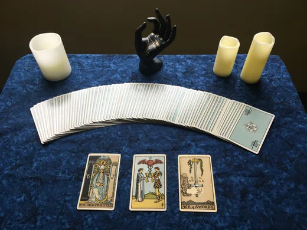
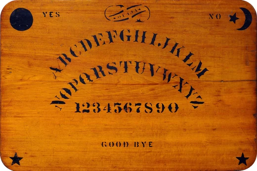

Diese Seite wird automatisch aus media-manifest.json erzeugt
(Stand 2026-11-02T23:27:43Z, Quellen abgerufen am 2026-11-03).
Sie nennt für jedes Bild Urheber, Lizenz mit Link, Originalquelle, Änderungen und
Länderhinweise. Alle Bilder wurden an der Originalquelle geprüft und bytegenau
gegen die dort gemeldete Prüfsumme abgeglichen.
6 Motive, 24 Bildvarianten,
4 eigene Zeichnungen. Lizenzpolitik: zugelassen sind
Public Domain, CC0 und CC-BY(-SA); ausgeschlossen sind NC, ND, GFDL-only und
ungeklärte Herkünfte.
Klassisches Pendel rad-media-01

Kegelpendel aus Messing an geflochtener Kordel — die verbreitetste Bauform. Das Objekt ist ein Alltagsgegenstand; das Foto belegt keine Wirkung.
Skaliert (LANCZOS) auf 520 px und 1040 px Breite, nach WebP überführt, EXIF entfernt, ICC-Profil beibehalten, nicht beschnitten.
Länderhinweis
Keine länderspezifische Besonderheit bekannt. Die Datei ist zusätzlich unter GFDL lizenziert; genutzt wird die CC-BY-SA-3.0-Option.
Attributionszeile: Carivaldi, „Klassisches Pendel“, CC BY-SA 3.0, via Wikimedia Commons (verändert: skaliert und ins WebP-Format überführt)
Bearbeitungen (Skalierung, Formatwechsel) sind Weitergaben unter gleichen Bedingungen: Die Varianten stehen ebenfalls unter CC BY-SA 3.0 und nennen Urheber und Änderung.
Dateien
assets/radiasthesie/media/520/klassisches-pendel.webp — 520×428 px, WEBP, 7.180 B
assets/radiasthesie/media/520/klassisches-pendel.avif — 520×428 px, AVIF, 6.217 B
assets/radiasthesie/media/1040/klassisches-pendel.webp — 1040×856 px, WEBP, 18.560 B
assets/radiasthesie/media/1040/klassisches-pendel.avif — 1040×856 px, AVIF, 17.153 B
Universalpendel rad-media-02

Universalpendel: Kugelkörper mit aufgedruckten Buchstaben und Messingstab, laut Bildbeschreibung Ergebnis der Arbeiten von de Belizal, Chaumery und Morel. Die Münze dient nur dem Grössenvergleich.
Skaliert (LANCZOS) auf 520 px und 1040 px Breite, nach WebP überführt, EXIF entfernt, ICC-Profil beibehalten, nicht beschnitten.
Länderhinweis
Keine länderspezifische Besonderheit bekannt.
Marke: „Universalpendel“ ist eine Gerätebezeichnung aus der Radiästhesie-Literatur; keine Prüfung einer allfälligen Marke erfolgt, die Bezeichnung wird rein beschreibend verwendet.
Attributionszeile: Wouter Hagens, „Universalpendel“, CC BY-SA 3.0, via Wikimedia Commons (verändert: skaliert und ins WebP-Format überführt)
Die Buchstaben auf der Kugel sind Teil eines Deutungssystems, keine Messskala. Die Varianten stehen unter CC BY-SA 3.0.
Dateien
assets/radiasthesie/media/520/universalpendel.webp — 520×438 px, WEBP, 15.360 B
assets/radiasthesie/media/520/universalpendel.avif — 520×438 px, AVIF, 13.477 B
assets/radiasthesie/media/1040/universalpendel.webp — 1040×876 px, WEBP, 44.382 B
assets/radiasthesie/media/1040/universalpendel.avif — 1040×876 px, AVIF, 38.276 B
Radiästhesierute (Winkelrute) rad-media-03

Winkelrute mit blau lackiertem Griffstück und zwei Messingarmen, im Gelände gehalten. Das Foto zeigt die Handhabung, nicht das Ergebnis einer Messung.
Skaliert (LANCZOS) auf 520 px und 1040 px Breite, nach WebP überführt, EXIF entfernt, ICC-Profil beibehalten, nicht beschnitten.
Länderhinweis
CC0 ist ein weltweiter Rechteverzicht; keine länderspezifische Einschränkung bekannt. Die Nennung des Urhebers erfolgt hier freiwillig.
Attributionszeile: José Antonio Agraz Sandoval, „Radiästhesierute (Winkelrute)“, CC0 1.0, via Wikimedia Commons (verändert: skaliert und ins WebP-Format überführt)
Das Original ist mit 566 × 425 px klein; es wird deshalb nur eine 520-px-Variante erzeugt und nicht hochskaliert. Für eine grossformatige Verwendung ist das Bild nicht geeignet.
Dateien
assets/radiasthesie/media/520/radiasthesierute.webp — 520×390 px, WEBP, 87.682 B
assets/radiasthesie/media/520/radiasthesierute.avif — 520×390 px, AVIF, 59.847 B
1040 px entfällt: Original ist nur 566 px breit; kein Hochskalieren
Historische Wünschelrute rad-media-04

Wünschelrute in einer Zeichnung aus dem erweiterten Exemplar von Thomas Pennants „A Tour in Wales“ (Ausgabe 1781), National Library of Wales. Gemeinfrei.
Skaliert (LANCZOS) auf 520 px und 1040 px Breite, nach WebP überführt, EXIF entfernt, ICC-Profil beibehalten, nicht beschnitten.
Länderhinweis
Gemeinfrei weltweit: Der Urheber starb 1798, die Schutzfrist von 70 Jahren nach dem Tod ist in allen relevanten Rechtsordnungen abgelaufen.
Attributionszeile: Thomas Pennant (1726–1798), laut Dateiseite; Vorlage: National Library of Wales, „Historische Wünschelrute“, Public Domain (PD-old), via Wikimedia Commons (verändert: skaliert und ins WebP-Format überführt)
Die Dateiseite nennt als Urheber Thomas Pennant, obwohl die Beschreibung von Zeichnungen durch Moses Griffiths, Ingleby und weitere Künstler spricht. Wer das vorliegende Blatt gezeichnet hat, ist dort nicht eindeutig bestimmt — die Zuschreibung bleibt unsicher. Für die Gemeinfreiheit ist das ohne Belang, für die Bildunterschrift schon: Sie nennt deshalb die Publikation, nicht einen einzelnen Zeichner.
Dateien
assets/radiasthesie/media/520/wuenschelrute-historisch.webp — 520×313 px, WEBP, 24.274 B
assets/radiasthesie/media/520/wuenschelrute-historisch.avif — 520×313 px, AVIF, 18.793 B
assets/radiasthesie/media/1040/wuenschelrute-historisch.webp — 1040×626 px, WEBP, 80.852 B
assets/radiasthesie/media/1040/wuenschelrute-historisch.avif — 1040×626 px, AVIF, 67.704 B
Tarot — Drei-Karten-Legung rad-media-05

Drei-Karten-Legung mit dem Rider-Waite-Smith-Deck (Ausgabe Smith-Waite Centennial): Die Hohepriesterin, Zwei der Kelche, Ass der Schwerter.
Skaliert (LANCZOS) auf 520 px und 1040 px Breite, nach WebP überführt, EXIF entfernt, ICC-Profil beibehalten, nicht beschnitten.
Länderhinweis
Das Foto ist CC0. Die abgebildeten Kartenmotive sind Reproduktionen des 1909 erschienenen Rider-Waite-Smith-Decks (Zeichnungen: Pamela Colman Smith, gestorben 1951). Nach deutschem und EU-Recht endete die Schutzfrist Ende 2021; in den USA ist das Deck seit Langem gemeinfrei. Die Kartenrückseite und Eigenleistungen der Neuausgabe sind nicht abgebildet.
Marke: „Smith-Waite Centennial“ und „Rider-Waite-Smith“ sind Bezeichnungen von Verlagen; sie werden hier nur zur Identifikation des abgebildeten Decks genannt.
Attributionszeile: Nosferattus, „Tarot — Drei-Karten-Legung“, CC0 1.0, via Wikimedia Commons (verändert: skaliert und ins WebP-Format überführt)
Die Legung ist gestellt. Das Bild dokumentiert eine verbreitete Praxis, nicht deren Treffsicherheit.
Dateien
assets/radiasthesie/media/520/tarot.webp — 520×390 px, WEBP, 35.892 B
assets/radiasthesie/media/520/tarot.avif — 520×390 px, AVIF, 24.155 B
assets/radiasthesie/media/1040/tarot.webp — 1040×780 px, WEBP, 112.604 B
assets/radiasthesie/media/1040/tarot.avif — 1040×780 px, AVIF, 79.347 B
Historisches Ouija-Brett rad-media-06

Ouija-Brett der Kennard Novelty Company, Baltimore, um 1890. Gemeinfrei; die Bezeichnung „Ouija“ ist als Marke geschützt — das Bild zeigt ein historisches Objekt, keine Produktempfehlung.
Skaliert (LANCZOS) auf 520 px und 1040 px Breite, nach WebP überführt, EXIF entfernt, ICC-Profil beibehalten, nicht beschnitten. Zusätzlich PNG-Fassung mit erhaltenem Alphakanal.
Länderhinweis
Die Dateiseite traegt {{PD-Art|PD-old-70-1923}} — nicht, wie in der Ausgangsliste vermerkt, eine Public-Domain-Mark. Beide Wege führen zu gemeinfrei, der genaue Baustein ist aber PD-old-70-1923. PD-Art ist am US-Recht ausgerichtet; für Deutschland und die EU greift § 64 UrhG: Bond starb 1921, Kennard 1925, die 70-Jahres-Frist endete 1992 bzw. 1996. Das Werk ist in beiden Rechtsordnungen gemeinfrei.
Marke: „Ouija“ ist eine eingetragene Marke (Hasbro). Die Gemeinfreiheit des historischen Bretts berührt das Markenrecht nicht. Zulässig ist die beschreibende Verwendung als historisches Dokument; das Bild darf nicht als Herkunfts- oder Qualitätshinweis für Produkte dienen.
Attributionszeile: Elijah Bond (1847–1921) und Charles Kennard (1856–1925), „Historisches Ouija-Brett“, Public Domain (PD-Art / PD-old-70-1923), via Wikimedia Commons (verändert: skaliert und ins WebP-Format überführt)
Das Brett ist freigestellt (Alphakanal mit echter Transparenz). Die Varianten behalten den Alphakanal; JPEG kommt dafür nicht in Frage, weil es keine Transparenz kennt.
Dateien
assets/radiasthesie/media/520/ouija-historisch.webp — 520×347 px, WEBP, 51.788 B
assets/radiasthesie/media/520/ouija-historisch.avif — 520×347 px, AVIF, 34.669 B
assets/radiasthesie/media/520/ouija-historisch.png — 520×347 px, PNG, 355.346 B
assets/radiasthesie/media/1040/ouija-historisch.webp — 1040×694 px, WEBP, 192.544 B
assets/radiasthesie/media/1040/ouija-historisch.avif — 1040×694 px, AVIF, 130.993 B
assets/radiasthesie/media/1040/ouija-historisch.png — 1040×694 px, PNG, 1.439.499 B
Eigene Zeichnungen
Diese SVGs sind im Projekt entstanden, nicht von Dritten übernommen. Sie wurden
auf aktive und externe Inhalte geprüft (keine Skripte, keine Event-Handler, keine
externen Referenzen, keine Entities).
Datei
Motiv
Rechte
Sicherheitsprüfung
assets/radiasthesie/pendel-geometrie.svg
Pendelgeometrie
Eigenwerk (Projekt Esoterik-Welt)
geprüft, ohne Befund
assets/radiasthesie/pendeltafel.svg
Pendeltafel
Eigenwerk (Projekt Esoterik-Welt)
geprüft, ohne Befund
assets/radiasthesie/winkelrute.svg
Winkelrute in Aufsicht
Eigenwerk (Projekt Esoterik-Welt)
geprüft, ohne Befund
assets/radiasthesie/orakel-karten.svg
Orakelkarten
Eigenwerk (Projekt Esoterik-Welt)
geprüft, ohne Befund
Offene Punkte
Keine LICENSE-Datei im Repository: die Lizenz der eigenen SVGs und der Projektinhalte ist nicht formal festgelegt.
Pfadabweichung zu RAD-01/INTEGRATIONSPUNKTE.md §2.5: dort sind assets/radiasthesie/fotos/ und assets/radiasthesie/media-manifest.json vorgesehen. Diese Karte schreibt assets/radiasthesie/media/ vor. Bewusst genau eine Manifestdatei unter assets/radiasthesie/media/media-manifest.json — eine Kopie an zweiter Stelle wäre eine zweite Wahrheit. RAD-06 muss diesen Pfad lesen.
Das Ouija-Logo ist bei 520 px nicht sicher zu entziffern; der Alt-Text beschreibt es deshalb, ohne es zu lesen.
Die Zuschreibung des Wünschelruten-Blattes an Thomas Pennant ist laut Dateiseite unsicher (Beschreibung nennt mehrere Zeichner).
Die Bilder sind noch nicht in js/data/radiasthesie.js eingebunden — das ist Integrationsumfang (RAD-06), nicht dieser Karte.
AVIF ist erzeugt, aber noch von keiner Ansicht ausgeliefert; der Einbau braucht <picture>/<source>.
Für die Auslieferung fehlt eine Bildnachweisseite im Seitenbau; hier liegt sie als generierte Datei bereit.
Bei den beiden CC-BY-SA-3.0-Motiven muss die Weitergabe unter gleichen Bedingungen sichtbar werden (Impressum- oder Bildnachweishinweis).
Erzeugt von docs/radiasthesie-completion/RAD-05/scripts/build_attribution.py.
Nicht von Hand bearbeiten — Änderungen am Manifest vornehmen und neu erzeugen.